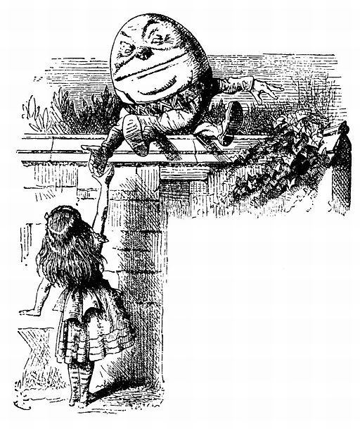

 John Tenniel, “Alice Meets Humpty”
Not all arguments are equal. Just because we have an arbitrary set of premises supporting some random conclusion doesn’t mean that we should feel ourselves compelled to buy this conclusion. Instead, as we will see, there are some arguments that really are better than others. Really good arguments are compelling on their own, and we should, as long as we are being rational, have no choice but to accept them. For the skeptics out there who doubt that we will ever be able to create such an argument, I should also point out that the clearest and best arguments really don’t end up saying anything very controversial or extraordinary. This is one of the limitations that logic imposes on us: if we are really being logical and using only reliable arguments we may have to refrain from claiming to be able to establish very much. Understanding the logic of arguments, if nothing else, should encourage us to be a little more modest in our claims to knowledge.
When we are arguing what we are doing is trying to establish the truth of something that we don’t know on the basis of other things that we already know or accept. What we are interested in is establishing the truth of the conclusion, yet for some reason it’s truth is not obviously apparent to us so we need to establish it on the basis of other claims the truth of which we can already accept. Arguments move us from the known to the unknown.
To take a simple example, suppose we would like to establish that Socrates fears death. We don’t have any direct reason for thinking that this is true. But we do know some other things that may be of use in establishing this. First we know that Socrates is a human being. Second we know that all human beings are mortal. Third, we know that all mortals fear death. In standard form this would be arranged like so:
Socrates is a human being.
All human beings are mortal.
All mortals fear death.
So Socrates fears death.
The information in the premises is enough information, as we can easily see, to establish our conclusion. Since Socrates is human he must be mortal, and he must fear death, since all mortals fear death. This argument seems like a pretty solid piece of reasoning. But how can we tell in general whether an argument is a good argument? It turns out that there are two questions we will need to ask about an argument in order to determine whether or not it is a good argument:
Is there a clear and solid connection between every step of the reasoning that leads us inevitably from premises to conclusion? In philosophical terminology: is it valid?
Are the claims that we started from, our premises, really true? In philosophical terminology: is it sound?
How do we answer these questions for the example above? It seems that there is a clear and solid connection between what the premises are saying and what the conclusion is saying. In fact we already showed this when showed that the conclusion necessarily follows from the premises. Technically this is a short and informal proof of its strength as an argument, that is, of its validity. So the answer to the first question is, yes, it is valid.
As far as the second question goes, however, we may have our doubts. Are all of the premises really true? Socrates is (or was) a human being – he was one of the first philosophers. And all human beings are in fact mortal. But do we really know whether all mortals, past, present and future fear death? So here is the one small weakness of the argument. If we could be assured that this premise was true the argument would be completely convincing and would provide adequate backup for the conclusion. But it rests, unfortunately, on a weak premise, so it is not a sound argument.
VALIDITY: in a valid argument IF the premises are true the conclusion MUST also be true.
SOUNDNESS: A sound argument is a valid argument that also has TRUE premises.
One thing to notice here is that the test for validity is entirely independent of the test for soundness. It is a little misleading, as we can now see, to ask whether arguments are either good or bad. More precisely, they can be:
Valid and sound: these are the best arguments, because the premises really establish the conclusion, and the premises are true – hence the conclusion really is true.
Valid but not sound: these are promising arguments that exhibit good logical form, but that rely on less than perfect information in their premises, and so are not completely solid.
Invalid: these arguments are bad arguments since they do not establish what they claim to be establishing. All invalid arguments are automatically unsound, since sound arguments are a subset of valid arguments.
Learning how to identify valid arguments is important for a course in philosophical ethics, since the philosophical approach to ethics consists largely of the examination of arguments about ethical issues. And the best way to learn this is by practicing. Consider the following argument, conveniently written in standard form:
The earth is a rotating sphere moving around the sun.
We are all on the surface of the earth.
Anything on the surface of a moving object moves with that object.
So we are all moving around the sun.
Forget for a moment about whether or not you buy the conclusion on its own. In analyzing an argument we need to know whether the premises support the conclusion adequately, so we pretend that we are not sure about the truth of the conclusion. Our first test is the test of validity. We ask ourselves: if the premises were true, could the conclusion be otherwise? Is the truth of the conclusion guaranteed by the truth of the premises? In this case it seems clear that if we are in fact all on the surface of an object that is moving around the sun, then we would all also have to be moving around the sun. So the argument is valid.
Notice that establishing an argument’s validity is not yet establishing that the conclusion is really true. It is only establishing that the conclusion would be true, if only we could show that the premises were true. In fact this argument was rejected until about 500 years ago because nobody was willing to accept the truth of the first premise. Establishing that this was true took quite a bit of effort by Copernicus, Kepler, Galileo and other early modern scientists. However, we now know that the premises are true. So this argument is not only valid, but also sound. And since it is sound we have proven beyond the shadow of a doubt that the conclusion is true. One more thing to point out here is that this argument has always been sound (or at least as long as the solar system has existed) even if many people denied the truth of the first premise. They were simply mistaken in this denial.
Let’s look at another example:
If you want to see the world, you should join the navy.
Jane wants to see the world.
So Jane should join the navy.
This argument is a little trickier because it contains an IF – THEN statement. IF – THEN statements, also known as conditionals, make indirect claims. They don’t just tell us what is the case, they tell us what would be the case if, or on condition that, something else were true. With this in mind let us consider this second argument. First we check for validity, by assuming that the premises are true and seeing if the conclusion would have to be true as well. In other words we are not yet interested in whether or not they really are true, but whether the argument works as an argument, whether the conclusion logically follows from the premises. It seems pretty clear, or at least it should seem clear, that this argument is valid. This is because if, as the first premise claims, the navy really is the best way to see the world, and if as the second premise claims, a person named Jane wants to see the world, then she should clearly join the navy. Notice that this argument’s validity does not have anything to do with its content, with the particular claims being made. Instead, validity is a matter of form, so that we could substitute any other content for the content of this argument without affecting its validity. Essentially this argument has the following form:
If you want to do A, then you should do B.
Person P wants to do A.
So person P should do B.
Here A, B can be substituted by any statements we please, and P can be any person we please, as long as our substitution is consistent throughout the argument. In all cases the resulting argument will turn out to be valid. Try it and you will see that the resulting arguments all come out valid. This is because validity is a matter of logical form regardless of the content we are arguing about.
The soundness of arguments, however, unlike validity, has everything to do with content, because an argument is sound when it is valid and it also has true premises. Back to the argument about Jane. Is it sound? First we note that it is valid, then we ask whether or not the premises are really true. Consider the first premise: “If you want to see the world you should join the navy.” It may be true that joining the navy is one way to see the world (provided that you don’t end up on a submarine, or in the engine room of a ship), but is it the only way? Of course not, so the first premise is just false. The second premise is also questionable, but for a different reason – we simply do not know who Jane is since this is a fictional example. So in spite of its validity this argument is unsound and we need not accept the conclusion as a true statement. It may in fact be true, but this argument gives us no good reason for thinking so. As an exercise you might want to try coming up with a sound argument that follows the form of this one.
Now consider, as our next example, the following argument:
If you want to see the world, you should join the navy.
Jane joined the navy.
So Jane wants to see the world.
This argument seems similar to the previous one, but it has one important difference. The conclusion of this argument was the second premise of the last argument, and the second premise of this argument was its conclusion. What happens to the validity of the argument when we make this simple change? Notice what this argument is saying. It is offering an explanation of why it is that Jane joined the navy – because she wanted to see the world. The question is, and this is the way we check for validity, are there any other possible explanations of why she joined the navy that are consistent with the premises? In other words, is it possible for the premises to both be true and the conclusion false? The answer is yes. It all hinges on what the first premise doesn’t say. It doesn’t say that the only possible reason to join the navy is the desire to see the world. It just says that if that’s what you happen to want then the navy is for you. So Jane could have joined the navy only because she wanted to learn all there is to know about marine diesel engines without caring whether she learned this in New Jersey or in the South Pacific ocean. To put this in yet another way: if it is at all possible, if there are no contradictions involved, for the premises of an argument to be true and the conclusion false, then the argument is invalid. This argument is invalid for precisely this reason. Furthermore, since it is invalid, this automatically makes it unsound, since in order for it to be sound it has to first be valid.